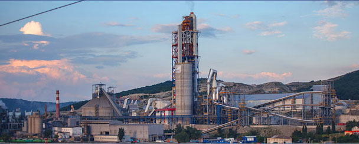

Наши золотые горы. История цемента в Новороссийске
источник: Газета "Новороссийский Рабочий" [ http://www.novrab.ru ]
Кажется, что горы наши были всегда и цемент там добывали с незапамятных времен. Даже не верится, что с того знаменательного дня, когда смололи первый килограмм новороссийского «серого золота», прошло всего 120 лет. Да каких! Замешана история нашего цемента на царях и революционерах, гениальных коммерсантах и героях-трудягах, на открытиях, подвигах и тайнах. Обо всем этом «НР» постарается рассказать в серии публикаций, прежде чем в декабре ОАО «Новоросцемент» и весь Новороссийск отметят юбилей цементной промышленности. Вот это рухляки так рухляки! О процветании у нас цементного бизнеса позаботилась природа. И сделала свое дело на все сто. Древнее меловое образование возникло из отложения весьма мелкой известковой мути, составляющей известковые и цементные рухляки (слово-то какое веселое!) и трескуны. «В одной из разновидностей этих рухляков, - сказано в статье начала прошлого века, - собраны все составные части портландского цемента, требующие для приготовления цемента наилучшего качества только обжига и размола». Уникальное месторождение случайно открыл профессор химии из Праги Осип Кучера, гостивший в наших краях. Слухи о новороссийских мергелях в том же 1879 году донеслись до столицы. 38-летний доктор химии Виктор Ливен, к тому времени основатель и владелец нескольких цемзаводов в России и Эстонии, доверился своему коммерческому чутью и занялся учреждением нового акционерного общества. В январе 1882 года государь император утвердил устав «Общества Черноморского цементного производства». Среди учредителей кроме Ливена были барон Этьен Жирард де-Сукантон, генерал-майор Леонид Адамович и торговый дом «Э.М. Мейер и К».
15 лет «Звезда» была «Super Star»
Ливены передавали владение и руководство нынешним «Пролетарием» внутри семейного клана больше тридцати лет. После Виктора Павловича на завод пришел Оскар Павлович, его младший брат, уже с 1911-го - племянник Оскара - Гуго Ливен. - При Оскаре Павловиче, - продолжает рассказ Людмила Николаевна, - порой незаслуженно забытом, завод довел выпуск до миллиона бочек цемента ежегодно, и далее строились грандиозные планы. Так, погрузка цемента на суда и выгрузка угля привели к необходимости строительства каменного пирса, позволяющего принимать пароходы длиной от 60 до 145 метров. Морским путем цемент новороссийского завода «Общества Черноморского цементного производства» стал развозиться по русским и иностранным портам Черного моря, в Санкт-Петербург, Архангельск и на русский Дальний Восток. Крупными партиями он доходил до Японии и Сан-Франциско. 15 лет «Звезда» была единственной на цементном «небосклоне» округи. Завод был гигантом в масштабах не только отечественной, но и мировой промышленности этой отрасли: 15 лет никто не посягнул на монополизм Ливенов, не пытался урвать и кусочка от лакомого Маркотхского хребта. Только в 1898 году открывается завод товарищества «Цепь» (теперь это «Октябрь»). До революции начинают работать еще и «Солнце» в Геленджике, «Бетон» (сейчас - «Первомайский»), «Титан», «Молот», «Скала», «Победа», «Орел» и «Атлас».
«Низенький, худенький, седой и лысый»
«...Одним из главных акционеров, приезжавших на охоту, был низенький, худенький, седой и лысый, с орлиным носом 60-летний немец Ливен, старший брат директора завода Оскара Ливена. Оскар Павлович был на 5 лет моложе брата, он был полной его противоположностью - крупный мужчина, маленькие серые усики и серые глаза, точно такой же, как у старшего брата, орлиный нос», - так вспоминает об отцах-основателях один из старых рабочих «Пролетария» Иван Ефимович Щедрин. А вот Александр Леонтьевич Петыга рассказывает: «Все мастера были немцы. Когда мы, ученики, да и взрослые рабочие не понимали, как надо делать, немец орал по-немецки, ругал и обзывал «свиньей». Иван Сергеевич Свиридов делится воспоминаниями о заполнении вакантных мест на заводе: «Около 40 человек встали в два ряда, стоим ждем. Взошло солнышко, и вскоре из конторы вышел директор и приказчик. Отобрали человек семь, остальным велели приходить через недельку, несмотря на то, что многие предлагали работать сколько угодно и за что угодно. Велели снять рубаху, осматривали мускулы, работают ли руки и ноги, видит ли и слышит рабочий, здоровы ли зубы». Все эти воспоминания датированы 49-50-ми годами. Могло ли тогда верным ленинцам вспоминаться другое? А стачки, а забастовки цементников, протестовавших против эксплуатации? Они тоже - доказательства истории. Но, по другим источникам, Оскар Ливен строил дома для рабочих, снабжал их ключевой водой, построил больницу и школу, где дети рабочих учились бесплатно. А Гуго Гуговича Ливена после революции Генеральное управление национализированных цементных предприятий Приновороссийского района «Цетроцемент» назначает заместителем технического и административного директора завода. Фактически же он выполнял все свои прежние функции по управлению заводом. Тоже - говорящий факт.
Где эта улица, где этот дом?
Сегодня от Ливенов на заводах ОАО «Новоросцемент» ничего не осталось. Нет-нет, конечно, в музее полнейшая экспозиция. А вот так, чтоб «тот самый камень...», «та самая печь...» Единственный живой свидетель тех лет - бывший Дом директора, принадлежавший администрации. Построенный в начале прошлого века, он и сегодня обитаем. Вверх и еще вверх по улице от музея, потом по длинной лестнице и вот он - с фантастической для окружающего захолустья архитектурой, но разрушающийся и жалкий своей неопрятностью. Здесь какие-то склады одной из воинских частей. «Три офицера - три кота да я, - все наши жильцы», - говорит открывшая нам дверь Светлана Васильевна. Ничего, ничего от тех благополучных времен. Трещины в потолке, хлещущая из порванной трубы вода. Только толстые стены, крутые ступени да арочные проемы в коридорах напоминают о прошлом. Да еще тоннели. «Они здесь, - уверенно говорит Светлана Васильевна, - точно есть. По ним знаете куда выйти можно!» Во где история... А еще история хранится у потомков Ливенов, семья которых уехала из Новороссийска с началом гражданской войны. Но забыть наш город не могут. В 79-м году заводы, которые вполне могли быть его собственностью, посетил сын Гуго Ливена - Пауль. Он еще помнил наши места, - так, смутные детские картинки из прошлого. А совсем недавно, в 1996-м, с частным визитом из Финляндии приезжала правнучка Биргитта, дразнила музейщиков уникальным семейным альбомом и удивлялась, что ее родственников так здесь помнят. .